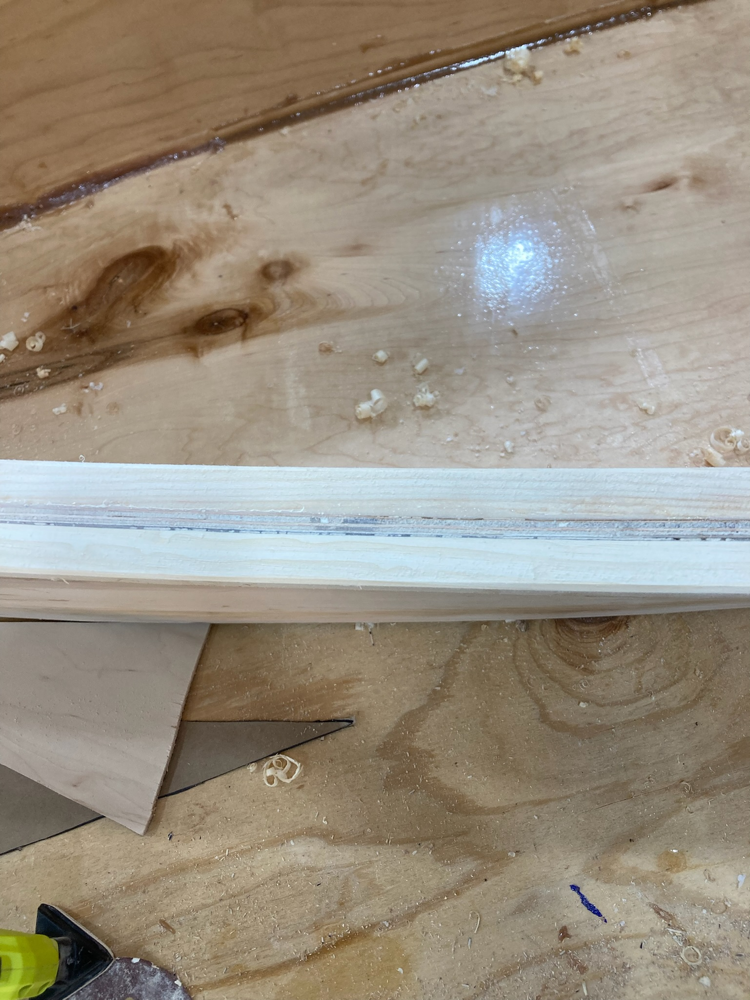
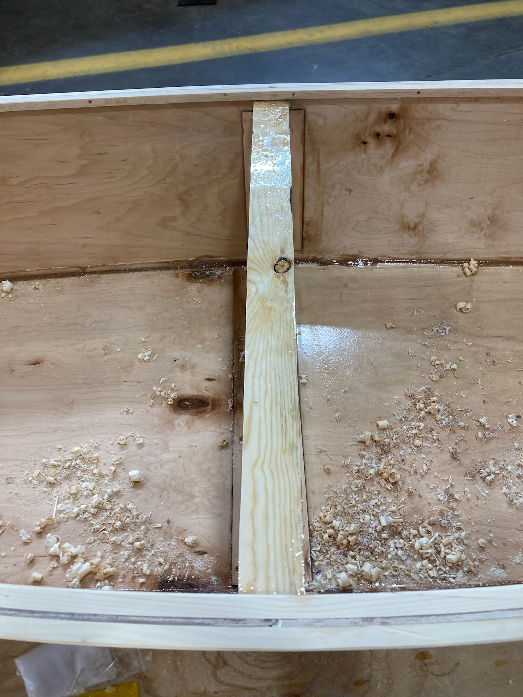

### Week 8: Boat Exterior
Cut skeg doubler, seats, and seat supports. Fit and attach gunwales and keel.
#### Team speed docs
We finished our inwales by epoxying them to the boat. Since we are prioritizing low mass for speed optimization, we opted to not add seats to our boat. We added our permanant center-spreader and continued sanding and polishing the boat's exterior.
Assignment: Document your work on your team’s website. Reading: The Craftsman, Part 2.2 (pp. 194-240).

